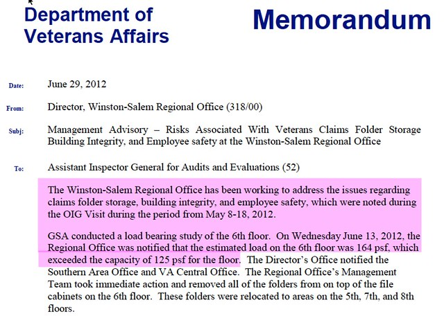

If your correspondence is hard to read, people will skip it or miss important details. Document design can make the difference between a message that someone just glances at and one that gets read. These resources demonstrate how to use document design to make your letters and memos polished, professional, and easy to read.
Photo credit: va-memo-2 by MedillNSZ on Flickr, used under a CC-BY 2.0 license.